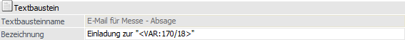
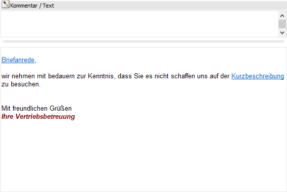

In dem Register "Textbausteine" können die Textbausteine angelegt bzw. die hinterlegten Texte überarbeitet werden.

Nachdem der gewünschte Textbaustein in der Übersicht ausgewählt wurde, kann dieser im rechten Teil des Fensters überarbeitet werden. Bei Anwahl des Buttons "Neuer Baustein" wird der Fokus automatisch in das Feld "Textbausteinname" gelegt und die Neuanlage kann beginnen.
Textbaustein

Ø Textbausteinname
In diesem Feld wird der Name des Textbausteines eingegeben, wobei der Name eindeutig sein muss, d.h. es kann keine zwei Textbausteine mit der gleichen Bezeichnung geben.
Hinweis
Sobald der Textbaustein das erste Mal gespeichert wurde ist der Name des Textbausteins fixiert und kann nicht mehr geändert werden.
Ø Bezeichnung
Hier kann eine Bezeichnung für den Textbaustein hinterlegt werden.
Hinweis
Textbausteine können auch für den Mailversand verwendet werden, wobei im Normalfall das Feld "Bezeichnung" als "Betreff" verwendet wird. Hierbei können auch Variablen (z.B. <VAR: 170/18> im Zusammenhang mit CRM) verwendet werden. Wenn das der Fall ist, dann sollte darauf geachtet werden, dass in der Variable (d.h. in den Daten, die zur Laufzeit eingefügt werden) keine Zeilenumbrüche vorhanden sind, da dieses eine Fehlermeldung verursachen würde.
Kommentar / Text

Ø Kommentar / Text
Die Felder, in denen der Textbaustein eingegeben wird, sind RTF-Felder. D.h. hier können die Schriftarten, -größen, -attribute etc. frei gewählt werden. Die Ausrichtung und die Gliederung kann ebenfalls, wie es z.B. in WordPad oder Write möglich ist, gestaltet werden. Im Standard wird von der WinLine immer jener Text herangezogen (z.B. im Postausgangsbuch), welcher im unteren Textfeld hinterlegt wurde.
Neben "normalen" Text können mit Hilfe von Ribbon-Buttons auch Sonderfunktionen eingefügt werden. Diese werden in der Regel in Form eines Links dargestellt, welcher einen blau und unterstrichen Text aufweist. Wenn solch ein Eintrag angeklickt wird, dann kann der Inhalt bearbeitet werden.
ü Variablen
Textbausteine können
auch als Vorlagen für Serienbriefe verwendet werden. Dazu können über den Button
"Variablen" eigene Platzhalter eingefügt werden. Details hierzu entnehmen Sie
bitte dem Kapitel Variable
einfügen.
ü Hyperlink
Durch Anklicken des
Buttons "Hyperlink" kann ein Link, d.h. ein Verweis, in den Textbaustein
eingefügt werden, wobei unterschiedliche Typen angeboten werden. Details hierzu
entnehmen Sie dem Kapitel Textbaustein
- Hyperlink einfügen.
ü Grafik
Mit dem Button "Grafik"
können Grafik-Dateien in den Textbaustein eingebunden werden. Details hierzu
entnehmen Sie bitte dem Kapitel Textbaustein -
Grafikeinstellungen.
ü Werte
Bei Verwendung von
Lohn-Textbausteinen können auch Daten aus den Abrechnungswerten herangezogen
werden (wird derzeit nur für den österreichischen LOHN unterstützt). Um diese
Daten einfügen zu können, gibt es den Button "Werte". Details hierzu entnehmen
Sie bitte dem Kapitel Textbaustein -
Lohnwerte.
Hinweis
Die Sonderfunktionen "Variablen" und "Werte" weisen noch eine weitere Besonderheit auf… die optische Darstellung, d.h. die Formatierung. Diese ist im ersten Moment nicht änderbar, wodurch es dazu kommen kann, dass ein Zahlenwert nicht "schön" im Text aussieht, da eine Zahl z.B. keine 2 Nachkommastellen aufweist.
Durch Aktivierung der Option "versteckte Elemente immer anzeigen" können im String der Variable hierfür noch die Formatierung des Andrucks bzw. der Anzeige mittels Befehl "FORMAT:" und eine mathematische Berechnung mittels "FORMULA" mitgegeben werden.
Beispiel
Die Variable 400/116 (Beschäftigungsstunden pro Woche) wird normalerweise in Textbausteinen nur in Ganzen Werten angedruckt. Wenn z.B. 38,5 Beschäftigungsstunden pro Woche im LOHN eingetragen wurde, wurde die Variable als "3850" angedruckt. Wenn jetzt gewünscht ist, dass diese Zahl im Stundenformat mit Nachkommastellen angedruckt wird, muss die Variable im Textbaustein wie folgt definiert sein:
[VAR:116;VIEW:400;FORMAT:###.#;FORMULA:<400/116>/100;LINK:Beschäftigungsstunden pro Woche]
Mit diesem Eintrag wird der Wert 38,5 angedruckt, weil das Format ###.## und die Formel mittels FORMULA:<400/116>/100 (Die Variable selbst dividiert durch tausend) mitangegeben wurde.